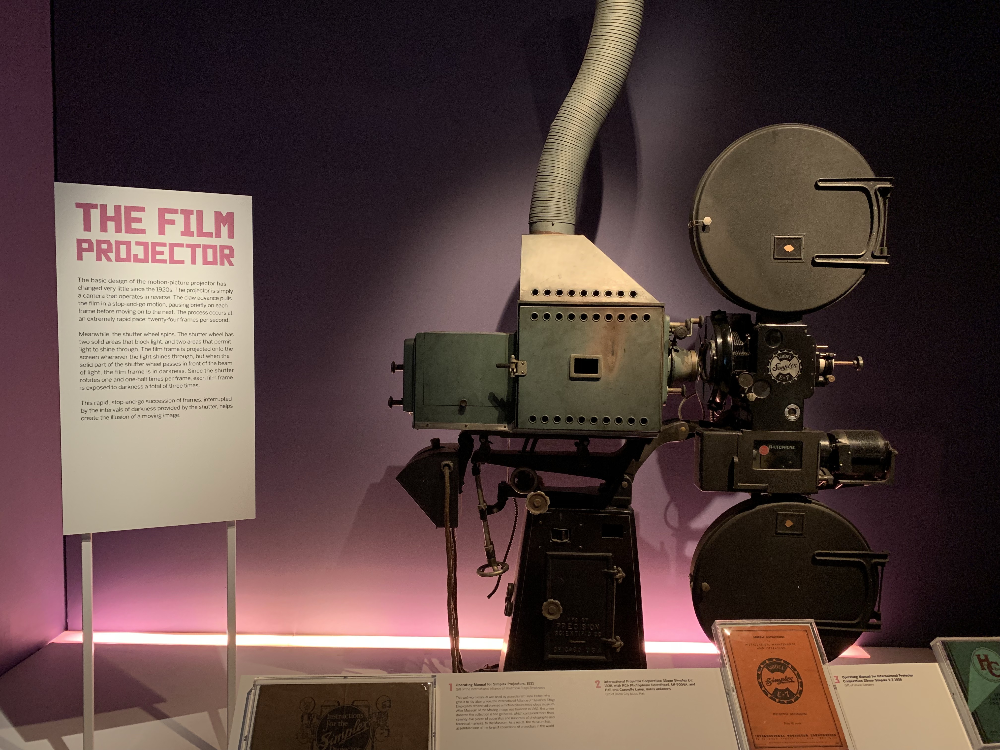
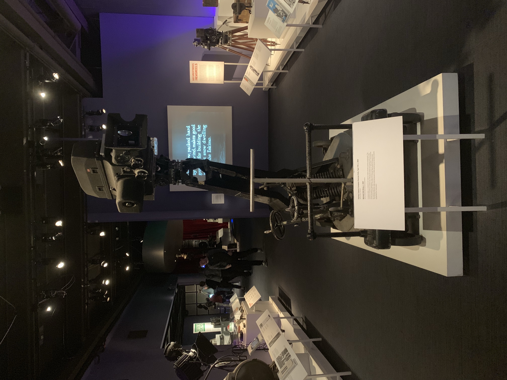
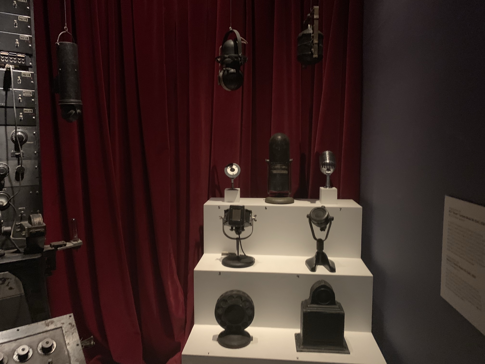
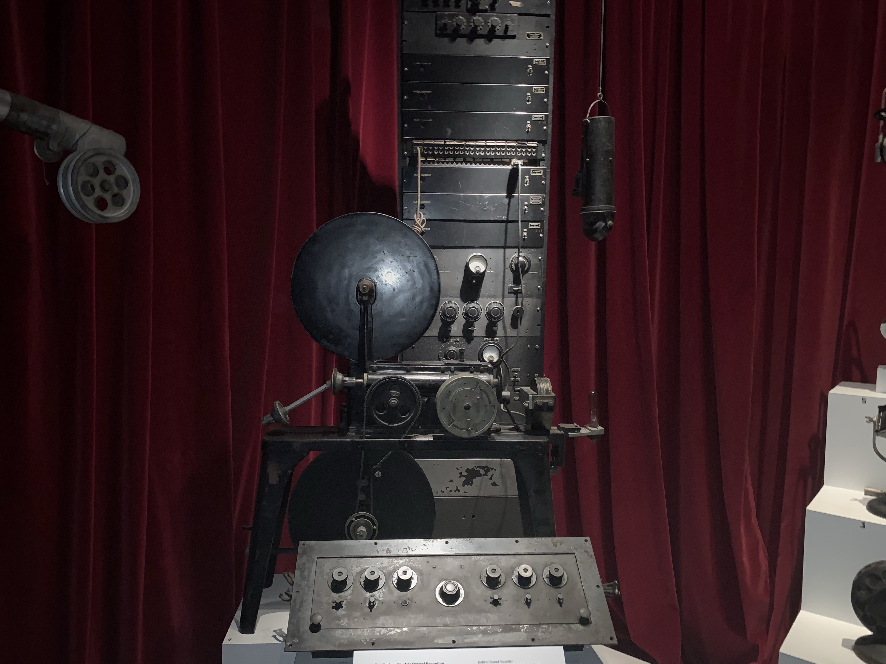

In this page i'm going to talk about the other side of the third floor which is the equipment side. Now on this side i saw many cool epuipment that i never thought they even existed ant it was amazing seeing them in person.
One of the Equipment i'm going to talk about right now is this giant Film projector
Now how it works i have no idea but it does look pretty nice so what this is is a camera that simply operates in reverse. i'm guessing that this was the type of equipment used in movie theatres back then to watch and they used film frames to watch the movies.
Another cool equipment was this giant camera
What this is is a studio camera its probably used for movie and tv sets.
the next item are these
 what these are is recording equipment and microphones they look really cool.
1 2 3